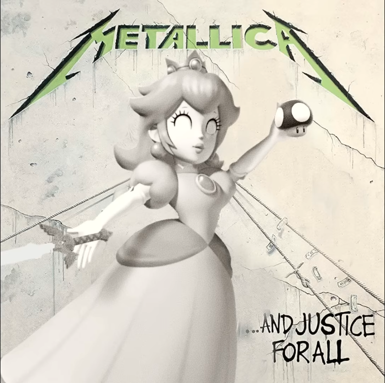

Facelift SM64 Soundfont Cover

Acerca de este álbum
Facelift SM64 Soundfont Cover toma el primer álbum de Alice in Chains y lo reconstruye nota a nota con los instrumentos del Super Mario 64. El sludge de Seattle se encuentra con el piano de Peach's Castle.
La portada estira la cara de Mario como en la intro del juego, con aberración cromática y el sello de Nintendo 64. Firmado como Peach in Chains. Para quienes quieren We Die Young con distorsión de cartucho.
- 12 pistas en calidad de estudio
- Archivos MP3 y WAV
- Soundfont listo para DAW
- Artwork en alta resolución
Lista de pistas
- We Die Young2:32
- Man in the Box4:46
- Sea of Sorrow5:49
- Bleed the Freak4:01
- I Can't Remember3:42
- Love, Hate, Love6:26
- It Ain't Like That4:37
- Sunshine4:44
- Put You Down3:16
- Confusion5:44
- I Know Somethin (Bout You)4:22
- Real Thing4:03
También te puede interesar

Nevermind SM64 Soundfont Cover.
Ver detalle